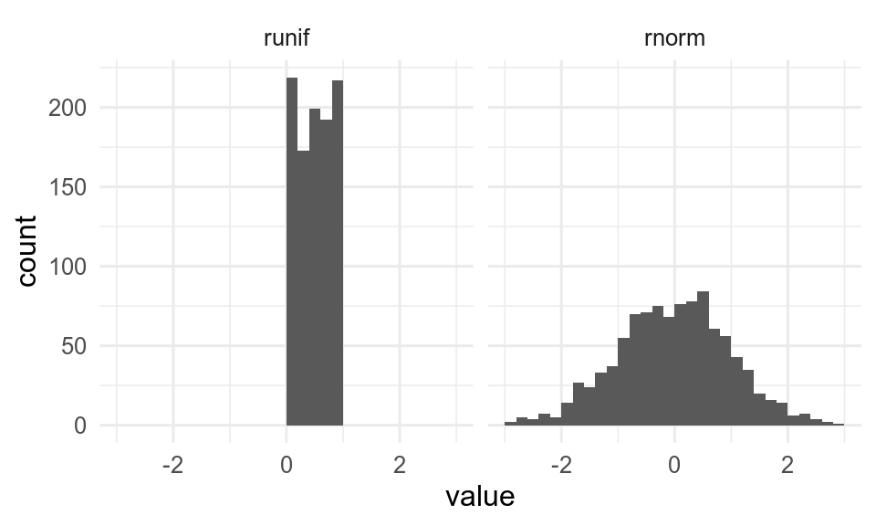

vec_char <- c("one", "two", "three")
vec_char[1] "one" "two" "three"

A vector is an object that contains one or several values of the same data type. For example, the object vec.char described below is a vector that contains 3 data elements of the type character.
vec_char <- c("one", "two", "three")
vec_char[1] "one" "two" "three"When conducting a statistical analysis, a vector is possibly the simplest object in which you may store entries for a single variable. In the following example, 24 data points corresponding to the temperature for a specific location registered over a period of 24 hours have been stored in the vector temperature:
temperature <- c(
8.7, 9.2, 9.4, 9.5, 9.7, 10.1, 10.3, 10.6, 10.7, 10.8, 11.3, 11.9, 12.2, 12.3,
11.7, 10.2, 10.3, 10.3, 10.4, 10.3, 10.1, 9.7, 9.5, 9.4
)temperature [1] 8.7 9.2 9.4 9.5 9.7 10.1 10.3 10.6 10.7 10.8 11.3 11.9 12.2 12.3 11.7
[16] 10.2 10.3 10.3 10.4 10.3 10.1 9.7 9.5 9.4Note that the data type of the whole vector is determined by the type of the elements it contains, as shown here:
class(temperature)[1] "numeric"Perhaps the simplest way to make a vector is with the function c() which combines the elements given between parentheses.
The data elements to be combined must be separated with a comma ,.
This may be applied not only to numerical values, but also to characters. When storing characters, you must use quotation marks " " around the elements.
one_two_three <- c("one", "two", "three")
one_two_three[1] "one" "two" "three"Note that you may combine data elements of various natures. Here we combine and store both numbers and characters, but everything becomes a character:
one_2_three_4 <- c("one", 2, "three", 4)
one_2_three_4[1] "one" "2" "three" "4" If one tries to store data elements of different types in a single vector, all the elements in this vector will be coerced into the type that is the most general.
The ranking from the most specific to the most general is as follows: logical < integer < numeric < character.
Let’s take the following example where we store a numeric, a character and an integer together:
As you see here the type of coercion is character, in other words the type of the most general data element.
It is possible to extract specific data elements from a vector based on their position. To do so, we use square brackets [ ]. Indicate first the vector name and then the element position(s) between the brackets:
temperature[c(2, 6)][1] 9.2 10.1Use negative indices to remove an element.
From the vector month.name
Here we will first review the primitive data types, then see a few useful data classes.
R lets you manipulate 6 primitive data types: numeric, integer, character, logical (also called Boolean), complex and raw. Only the first four types are relevant to the scope of this website.
In the following sections, we will use the function class() to identify the nature of the data stored in objects (mode() and typeof() give related information).
Any number with a decimal value, whether positive or negative, is of type numeric. The object num created below contains a single decimal value and is thus also numeric.
num <- -35.2
class(num)[1] "numeric"Integers are positive or negative numbers that do not contain a decimal value. The object int below contains a single integer and is thus of type integer.
int <- 35L
class(int)[1] "integer"Note that int was assigned the number 35L. The “L” that follows the number forces the object to store it as an integer. If we write 35 instead of 35L, the object is just numeric as shown below.
not_int <- 35
class(not_int)[1] "numeric"An object containing a string of letters combined (or not) with numbers, or even a single letter, is of type character. The letters may be upper and/or lower case. The object char below contains a single word and is thus defined as character.
char <- "Letters"
class(char)[1] "character"Note that the strings of characters must be stored in objects using " ".
Logical (or boolean) defines binary objects which contain TRUE or FALSE. This is the case of the object logic below.
logic <- TRUE
class(logic)[1] "logical"Note that TRUE and FALSE are sometimes replaced with “T” or “F”. This is bad coding practice, which may result in weird errors that may compromise your work and the validity of its output.
It is possible to modify the type of an existing object with a series of simple functions like as.numeric(), as.integer(), as.character(), etc.
Let’s consider the object integ created below.
integ <- 35L
integ[1] 35integ contains a single data element (35L) which is defined as an integer:
class(integ)[1] "integer"integ may be transformed into a simple numerical value by using the function as.numeric():
integ_num <- as.numeric(integ)
class(integ_num)[1] "numeric"And it is possible to reverse this action with as.integer():
integ_int <- as.integer(integ_num)
class(integ_int)[1] "integer"It is also possible to transform it into a string of characters with as.character():
integ_char <- as.character(integ)
class(integ_char)[1] "character"Make a vector that contains a word, a number and a logical value
R allows to transform the format of an object from something simple like a number or a string of characters to something more advanced like a date or a factor. Date and factor are not data types per se, but data classes.
The data element 1980-02-08 stored in the object birthdate below is nothing more than a string of characters.
To make it a date object, one must use the function as.Date():
Even though this does not seem to affect the way the data element is displayed, such a conversion is determining with regard to how th element is going to be handled in calculations. The calculation below displays the date that occurs 10 days before birthdate:
ten_days_before_my_birthdate <- birthdate - 10
ten_days_before_my_birthdate[1] "1980-01-29"Such a calculation would not have been possible without the conversion from character to date, as demonstrated by this error message:
ten_days_before_my_birthday <- birthday - 10Error in birthday - 10: non-numeric argument to binary operatorThere is a tutorial for handling dates with the lubridate package in biostats.tutorials.
A factor is an object that only contains predefined values. These predefined values are called the levels of the factor. Factors are especially useful in the context of statistical analysis where categorical data are involved (like ANOVA, etc), and for forcing the order of categories on a plot. Categories often appear as “text labels”, and may thus look like simple strings of characters.
In the following example, the object scandinavian_countries is a factor that contains 7 elements and three levels: Norway, Sweden and Denmark.
scandinavian_countries[1] Norway Denmark Sweden Denmark Sweden Norway Denmark
Levels: Norway Denmark Swedenclass(scandinavian_countries)[1] "factor"One way to build such a factor consists in converting a character object such as scandinavia with the function factor(). However, one must not forget to set the levels correctly with the argument levels =.
Throughout this website, we will use examples that include random series of numbers, sequences of characters or numbers, etc. These sequences and series are often created by a bunch of functions or expressions, some of which are described below.
The function rep() comes handy when you wish to repeat data elements n times in a row, or to repeat a sequence of elements n times. Using various arguments, you can decide how many times and/or in which manner the elements or sequences have to be repeated.
The simplest form of usage of rep() is rep(x, times = n) where x is what you want to repeat (string, number(s), etc) and n the number of iterations.
[1] 1 2 3 1 2 3 1 2 3[1] "One" "Two" "Three" "One" "Two" "Three" "One" "Two" "Three"The argument each = n allows for repeating n times each element at a time.
[1] 1 1 1 2 2 2 3 3 3[1] "One" "One" "One" "Two" "Two" "Two" "Three" "Three" "Three"Write code that will
The following section provides you with expressions or functions that build sequences of numerical or text values.
The colon separator : used in the expression a:b creates a series of consecutive numbers ranging from a to b with an increment of 1.
14:24 [1] 14 15 16 17 18 19 20 21 22 23 24Note that b is not necessarily the last element of the series.
14:24.5 [1] 14 15 16 17 18 19 20 21 22 23 2414.5:24 [1] 14.5 15.5 16.5 17.5 18.5 19.5 20.5 21.5 22.5 23.5Similar to a:b, seq(a, b) creates a series of consecutive numbers ranging from a to b with an increment of 1.
seq(14, 24) [1] 14 15 16 17 18 19 20 21 22 23 24Again, b is not necessarily the last element of the series.
seq(14, 24.5) [1] 14 15 16 17 18 19 20 21 22 23 24seq(14.5, 24) [1] 14.5 15.5 16.5 17.5 18.5 19.5 20.5 21.5 22.5 23.5You can use a set of additional arguments in seq() to adjust the output. Adding by = allows to tune the incrementation to any value you want (including decimal values). length.out = adjusts the incrementation to provide the desired number of elements ranging precisely from a to b.
seq(14, 24, by = 2.5)[1] 14.0 16.5 19.0 21.5 24.0seq(14, 24, length.out = 7)[1] 14.00000 15.66667 17.33333 19.00000 20.66667 22.33333 24.00000The following section provides you with functions that build series of random, numerical values. It demonstrates functions to make sequences from uniform and normal distributions, but there are many more distributions available in R.

runif(n) returns a series of n random numbers from a uniform distribution between 0 and 1.
runif(n = 7)[1] 0.6740814 0.1066564 0.8631606 0.8567856 0.8637326 0.1680853 0.7485874runif(n, min = a, max = b) returns a series of n random numbers in the range from a to b:
runif(n = 7, min = 10, max = 100)[1] 74.15356 11.46994 38.97346 15.60218 77.51773 21.98429 37.12705rnorm(n) creates a series of n numbers taken from a normal distribution.
rnorm(n = 10) [1] 1.5396922 -0.1386351 0.6422275 0.7853884 -0.5656092 0.1924748
[7] 1.1835780 2.1732342 1.1041364 0.6094332By default, the normally distributed population is set up with a mean of 0 and a standard deviation of 1, but this may be adjusted with mean = and sd =.
rnorm(n = 10, mean = 50, sd = 3) [1] 50.20002 47.95966 50.90545 47.44207 53.90927 52.07324 52.37581 52.37890
[9] 47.41829 47.24781sample(x, size, replace = TRUE/FALSE) returns a sample of n values randomly taken in the object x (which may be a vector, a series such as 1:100, etc). replace = followed by either TRUE or FALSE defines whether or not a data element can appear repeatedly in the sample.
sample(x = 1:100, size = 10, replace = FALSE) [1] 6 28 22 41 40 45 43 8 98 97sample(x = 20:30, size = 7, replace = TRUE)[1] 26 26 20 28 28 28 25An interesting property of the function sample() is that it can be used to shuffle the result of an expression or the content of a vector, something which is useful for randomization of data elements. In the following example, sample() shuffles and returns all the values in 1:10:
sample(1:10) [1] 5 9 10 2 1 4 3 7 8 6set.seed()
The sequence of “random” numbers that R generates are not strictly random but pseudo-random. The sequence repeats with a very long period (219937 - 1 for the default Mersenne-Twister algorithm). If you want to get exactly the same sequence again (for reproducibility), you can set the seed for the random numbers with set.seed().
[1] 1.37379088 0.86210687 0.47348910 0.70126281 -0.08505527[1] 1.37379088 0.86210687 0.47348910 0.70126281 -0.08505527Now that you know the basics of R and that you have all the tools to “manually” create R objects, you will learn how to import a data set from an external source. We will see how to read and fetch data from various file types such as .txt, .csv, .xls, .xlsx, and directly store it in tibbles.